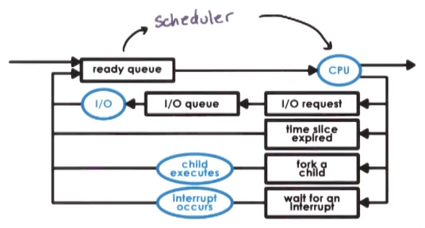
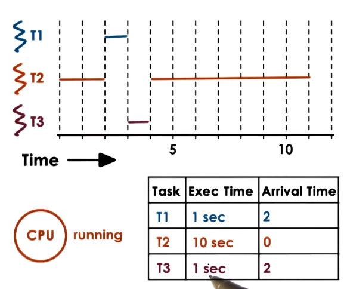
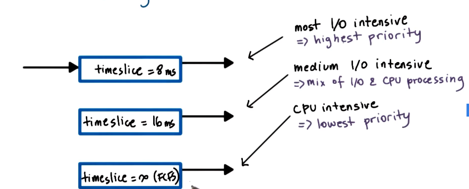
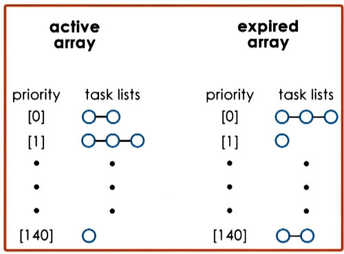
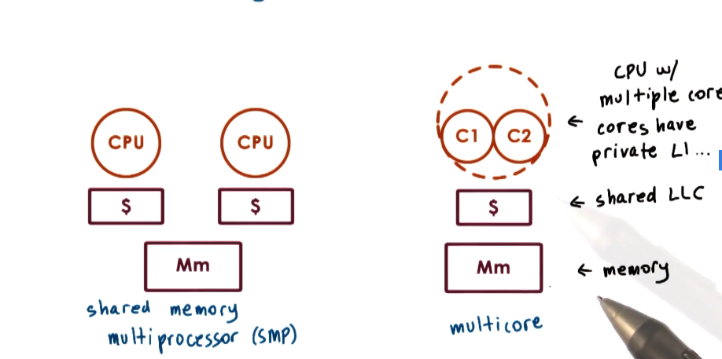
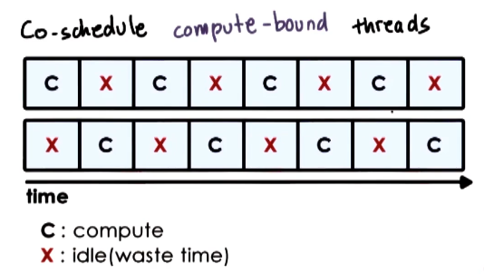
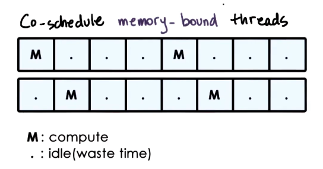
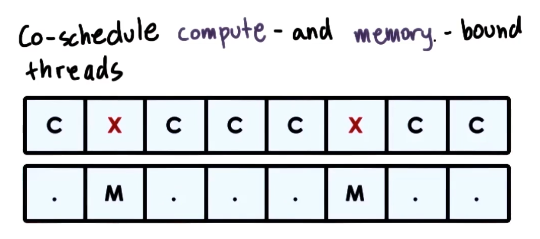

GIOS Lecture Notes - Part 3 Lesson 1 - Scheduling
CPU Scheduling
- CPU Scheduler:
- decides how and when processes (and their threads) access shared CPUs
- We use the term task to interchangeable mean process or thread
- schedules tasks running user-level processes/threads as well as kernel-level threads
- decides how and when processes (and their threads) access shared CPUs

- CPU Scheduler:
- Chooses one of ready tasks to run on CPU
- Runs when:
- CPU becomes idle – so that CPU isn’t sitting unused
- New task becomes ready – in case the new task is of higher priority than the currently executing task
- Timeslice expired timeout – allow for fair sharing across tasks, illusion of multiple tasks running simultaneously for the user
- Thread is dispatched on CPU
- context switch, enter user mode, set program counter, and go!
- Scheduling == choose task from ready queue
- BUT WHICH TO CHOOSE!? – scheduling policy/algorithm
- HOW!? – depends on runqueue data structure
- Design of the runqueue and the scheduling algortihm are tightly coupled. Some algorithms require certain structures, and certain runqueue structures limit which algorithms can be supported efficiently
Obvious Algorithms
- Assign tasks immediately
- scheduling is very simple (really just a FIFO queue)
- First Come First Served (FCFS)
- Assign simple tasks first
- maximizes the # of orders processed over time
- maximize throughput – shortest job first (SJF)
- Assign complex tasks first
- If there are aspects of the platform that are not engaged with simpler tasks, this will make sure those do not sit idle
- maximize utilization of CPU, devices, memory
Run to Completion Scheduling
- Assumes that as soon as a task is assigned to a CPU, it will run until it completes
- Initial assumptions
- group of task/jobs
- these tasks have known execution times
- no preemption in system,
- single CPU
- Metrics
- throughput
- avg job completion time
- avg job wait time
- CPU utilization
- First Come First Served (FCFS) Algorithm
- schedules tasks in order of arrival
- Runqueue == Organize tasks in a queue structure (FIFO queue)
- Shortest Job First (SJF) algorithm
- schedules tasks in order of their execution time
- Runqueue == ordered queue (tasks inserted in specific order to preserve sorting by runtime)
- or a tree, with nodes ordered by execution time
Preemptive Scheduling
SJF + Preempt
- Relaxing the no interruption requirement and the “all tasks known at start” assumption
- For SJF with preemption, what happens if a new task shows up that is shorter than currently executing task?
- It gets preempted!

- ERRATA – T2 should execute until t=12
- Ok, but what happens if you don’t know execution time, as is basically always the case?
- Must estimate using heuristics
- based on history => job running time in prior executions?
- how long did a task run last time?
- how long did a task run last n times? (windowed average)
Priority Scheduling
- Tasks have different priority levels
- Scheduler should run the highest priority task next
- Requires preemption - scheduler must be able to stop low priority task and execute a higher priority one
- Scheduler must also be able to assess priority, obviously
- Achievable by having multiple runqueues, 1 per priority level, and having the scheduler select work from the highest priority runqueue which is not empty
- Alternatively could have a tree ordered on priority
- One danger of this approach is starvation, in which a low priority task just never gets to run
- Priority aging addresses this – by making priority a function of both actual priority and the time spent waiting in queue
Priority Inversion
- What happens if a lower priority task arrives first, runs, and acquires a lock that a later, higher priority task needs?
- Knocks higher priority task out of runnable state, blocked behind lower level task holding lock, until it releases lock
- Once low priority task relase lock, higher priority task will preempt and execute
- Actual order of execution is different than order of priorities, called priority inversion
- Solution – temporariliy boost priority of mutex owner. Prevents high priority task from starting and getting immediately blocked, improving average overall performance. Priority of task would then be lowered again on mutex release.
Round Robin Scheduling
- Pick up first task from queue (like FCFS)
- Task may yield to wait on I/O (unlike FCFS)
- Tasks placed on end of queue after yielding
- If tasks don’t yield, ends up looking like FCFS
- Round Robin with Priorities
- If tasks don’t arrive at same time, and priority is assessed
- Preemption occurs when new higher priority tasks arrive
- Round Robin with interleaving
- Instead of waiting on explicit yields, can just interrupt tasks to give each a turn
- Known as Timeslicing
Timesharing and Timeslices
- Timeslice == maximum amount of uninterrupted time given to a task
- aka a time quantum
- Task may run less than timeslice time
- if it has to wait on I/O, wait on synhcronization, etc
- will be placed on a queue
- If a higher priority task becomes runnable
- if it has to wait on I/O, wait on synhcronization, etc
- Using timeslices, tasks are interleaved
- timesharing the CPU
- CPU bound tasks -> preempted after the timeslice
- Pros
- short tasks finish sooner
- more responsive
- lengthy I/O operations initiated sooner
- Cons
- Overhead!
- Switching between tasks with preemption is not free, you lose time every time you do
- Round robin causes far more switching than previously examined approaches
- overhead can be kept reasonable as long as timeslice time is greater than the time it takes to context switch
- How long should a timeslice be?
- Must balance benefits and overheads
- Will differ for I/O-bound tasks vs CPU-bound tasks
- CPU-Bound Timeslice Length
- Longer timeslice values perform better overall for CPU-bound tasks, as user will mostly care about throughput and avg completion time. In fact, infinite timeslice, or not timselicing at all, would work best for these
- This is largely due to it limiting context switching overheads, thus keeping CPU utilization and throughput high
Timeslice = 1 second
throughput = 2 / (10 + 10 + 19*0.1) = 0.091 tasks/second
avg. wait time = (0 + (1+0.1)) / 2 = 0.55 seconds
avg. comp. time = 21.35 seconds
Timeslice = 5 seconds
throughput = 2 / (10 + 10 + 3*0.1) = 0.098 tasks/second
avg. wait time = (0 + (5+0.1)) / 2 = 3.05 seconds
avg. comp. time = 17.75 seconds
Timeslice = 10 seconds
throughput = 2 / (10 + 10) = 0.1 tasks/second
avg. wait time = (0 + (10)) / 2 = 5 seconds
avg. comp. time = (10 + 20)/2 = 15 seconds
- I/O-Bound Timeslice Length
- In the presence of I/O-bound tasks, smaller timeslices perform better. They get hurt badly by long timeslices in the presence of CPU-bound tasks, as they will yield every time there is an I/O operation, and then wait the full timeslice to get their turn again.
- Can issue I/O ops earlier
- keeps CPU and device utilization high
- better user-perceived performance
- In the presence of I/O-bound tasks, smaller timeslices perform better. They get hurt badly by long timeslices in the presence of CPU-bound tasks, as they will yield every time there is an I/O operation, and then wait the full timeslice to get their turn again.
for Timeslice = 1sec
avg. comp. time = (21.9 + 20.8) / 2 = 21.35
Timeslice = 5 seconds
throughput = 2 / 24.3 = 0.082 tasks/second
avg. wait time = 5.1 / 2 = 2.55 seconds
avg. comp. time = (11.2 + 24.3) / 2 = 17.75 seconds
Runqueue Data Structures
- Runqueue does not have to actually be a queue data structure. Lots of options
- Requirement is that it’s easy for scheduler to find the next thread to run for the given scheduling algorithm
- If we want I/O and CPU bound tasks to have different timeslice values:
- we could use the same runqueue, and check the type of task
- separate the two task types into their own runqueue, each with their own policy
Multiqueue data structures

- Multi-Level Feedback Queue
- Task enter topmost queue with lowest timeslice
- if task yields voluntarily, good choice keep it at the top level
- if task uses up entire timeslice, more cpu intensive than thought, push it down to lower level next time it needs to run
- if task in low queue starts yielding before timeslice expires, boost its priority up to a higher level again
- Different than priority queues
- different treatment of taskss at each level
- allows for ongoing feedback for optimizing treatment of tasks
- Pros
- timeslicing benefits provided for I/O bound tasks
- timeslicing overheads avoided for CPU bound tasks
- Cons
- How do we know if a task is CPU or I/O intensive?
- How de we know how I/O intensive a task is ?
- we could use history-based heuristics?
- Task enter topmost queue with lowest timeslice
Linux 0(1) Scheduler
- Named because it can handle task management functions (select/add task) in constant time regardless of task count
- A preemptive, priority-based scheduler
- total of 140 priority levels from 0 - 139
- levels 0-99 are categorized as ‘real-time tasks’
- levels 100-139 are categorized as ‘timesharing tasks’
- user processes are all timesharing priority level
- default to 120
- can be adjusted using a ‘nice value’, which uses a system call and ranges from -20 to 19, allowing user processes access to the full range of timesharing priority levels
- Associates different timselice values to different priority levels
- Uses feedback mechanisms to allow tasks performance in the past to adjust their priority level in the future
- Timeslice value
- depends on priority
- smallest for low priority (lowest priority is 139)
- highest for high priority (highest priority is 0)
- Feedback
- based on sleep time: time waiting or idle
- longer sleep time indicates that a task is interactive, showing it spent time waiting on user input or some kinds of events
- when this is detected, we must boost priority. this algorithm subtracts 5 from the priority level
- smaller sleep times indicate a compute-intensive task
- we must lower priority. this algorithm adds 5 to the priority level

- Runqueue == 2 arrays of tasks
- each array element points to the first runnable task at the corresponding priority level
- Active Array
- used to pick the next task to run
- constant time to add/select a task
- tasks remain in queue in active array until timeslice expires
- only after task has consumed its timeslice will it be removed from list on active array and placed in list on expired array
- Expired Array
- contains tasks that are not currently active. scheduler will not select tasks from expired array as long as there are tasks in active aray
- when there are no more tasks in the active array, swap the active and expired arrays.
- This is why the low priority tasks are given smaller timeslices. As long as high priority tasks have any timeslice left: they’ll stick in active array much longer, and likely complete before swapping to the expired array.
- This allows the arrays themselves to serve as an aging mechanism
- Introduced in 2.5, but as workloads changed, and became more time-sensitive (e.g streaming video), the jitter caused by this algorithm became unacceptable. O(1) was replaced as the kernel default by the Completely Fair Scheduler (CFS) in 2.6.23. Still present in the kernel though, and you could change to it if you wanted.
Linux Completely Fair Scheduler (CFS)
- Problems with O(1)
- performance of interactive tasks
- once a task’s timeslice expired, it has to wait for everything else to either finish or burn through its very long high-priority timeslice before getting a chance to progress any further
- a lot of “jitter”
- no fairness guarantees
- in a given time interval all the tasks should be able to run for an amount of time proportional to their priority. O(1) makes no such guarantee.
- performance of interactive tasks
- CFS is the default scheduleer for all non real-time tasks. The real-time scheduler is the default for those
- The runqueue for CFS is a red-black tree
- red-black tree belong to family of tree structures that have the property that as nodes are added to or removed from the tree, the tree will self-balance such that all paths from the root to the leaves of the tree are approximately the same size
- orderd by vruntime
- vruntime == time spent running on CPU
- at nanosecond granularity
- nodes to left of tree have spent less time on CPU, and so need to be scheduled sooner
- leaves in the tree don’t really play any role in the scheduler
- CFS scheduling always picks the leftmost node
- Scheduler periodically adjusts vruntime of currently executing task, compare to leftmost vruntime.
- If smaller, continue running
- If larger, preempt and place appropriately in the tree
- Select new leftmost node and begin executing that instead
- vruntime progress rate depends on priority and niceness
- progress rate faster for low priority tasks – time passes more quickly
- progress rate slower for higher priority tasks – time passes more slowly
- Same tree for all priorities, attribute of nodes encodes priority
- Performance
- select task runs in constant time O(1)
- add task runs in logarithmic time O(log N)
- acceptable, but as systems support more tasks at once this may become limiting and cause need for a new scheduler
Scheduling on Multiprocessors

- Shared memory multiprocessor
- all memory in system, all memory is shared among all CPUs
- Multiple cores per CPU common in consumer devices, while many multicore CPUs common in enterprise hardware
- OS sees all CPUs/Cores as entities onto which it can schedule execution contexts
- The performance of tasks is highly dependent on whether the state that the task needs is present in cache or in memory
- While executing, a task will likely be able to bring needed state into various cache levels, creating a hot cache
- On the next time around, if the task is scheduled to execute on another CPU, none of its state will be present in the cache (cold cache), and it will have to bring all of the state back in. Performancehit
- So, cache-affinity is important!
- Try to schedule tasks onto the same CPU where they were executing before.
- This can be done with a hierarchical schedule architecture
- Have a top-level load-balancing component that assigns tasks to various CPUs
- Use information such as queue length, or CPU idle status
- Then a per-CPU scheduler with a per-CPU runqueue repeatedly schedules those tasks onto a given CPU
- Have a top-level load-balancing component that assigns tasks to various CPUs
- In addition to multiple processors, it is possible to have multiple memory nodes
- The CPUs and memory nodes will be interconnected
- e.g. Intel QPI
- Memory node can be directly connected to some subset of CPUs
- e.g. socket of multiple processers
- The upshot of this is that the access path from some subset of CPUs to a given memory node may be much faster than to another memory node. This is called non-uniform memory access (NUMA) architecture
- Then, scheduler wants to keep tasks on CPU closer to memory node where their state is
- aka NUMA-aware scheduling
- The CPUs and memory nodes will be interconnected
Hyperthreading
- The reason we have to context switch among threads is because the CPU has one set of registers to describe the active execution context (stack pointer, program counter)
- Over time, hardware architects have helped hide some overhead from context switching
- CPUs with multiple sets of registers, each for separate execution context.
- Over time, hardware architects have helped hide some overhead from context switching
- Hyperthreading == multiple hardware-supported execution contexts
- Still 1 CPU but with very fast context switch
- AKA hardware multithreading, chip multithreading (CMT), simultaneous multithreading (SMT)
- 2 hardware threads is common, but more available on some high end hardware (up to 8)
- Can be enabled/disabled at boot time.
- if enabled, scheduler basically treats each hardware thread as a virtual CPU to schedule onto
- SMT time to context switch is O(cycles)
- Memory load time is O(100 cycles)
- just as concurrency hides idle I/O latency, hyperthreading can hide memory access latency
- So, which two tasks to schedule simultaneously?
- Review of chip multithreading Fedorova paper.
Scheduling for Hyperthreading Platforms
- Assumptions
- 1 thread issues instruction on each cycle
- max instruction per cycle (IPC) = 1
- memory access == 4 cycles
- hardware switching between hardware threads is instantaneous
- SMT with 2 hardware threads
- 1 thread issues instruction on each cycle
- Co-schedule compute bound threads
- threads interfere with each other, as they contend for CPU pipeline resources
- Performance degrades by a factor of 2 for both threads
- memory is idle

- Co-chedule memory-bound threads
- CPU is frequently idle as both threads issue memory operations and then must wait. This wastes CPU cycles

- Co-schedule compute and memory bound threads
- mix of CPU and memory intensive threads
- fully utulize processor cycle
- whenever thread needs to perform a memory reference, context switch to it, fire off the memory reference, and then pop back to CPU intensive thread and keep going
- avoid/limit contention on processor pipeline
- all components (both CPU and memory) are well utilized
- still leads to interference and degradation, but minimal

- How do we know if a task is CPU-bound or memory-bound?
- Use historic information – look at thread’s past behavior
- “sleep time” won’t work here
- thread is not sleeping when waiting on memory reference
- software takes too much time to compute for SMT
- so, we need hardware-level information to answer this
- hardware counters!
- L1, L2, … LLC misses
- number of IPC instructions
- power and energy usage data
- Software interfaces and tools to access these counters
- e.g. oprofile, Linux perf tool
- oprofile website lists available hardware counters on different architectures
- hardware counters!
- Use hardware counters to estimate what kinds of resources a thread needs
- scheduler can use this to pick a good mix of threads
- for example if there are lots of LLC misses a task may be memory bound, as its footprint does not fit in the caches
- counter information can be ambiguous, but scheduler can make informed decisions
- typically use information from multiple counters
- models with per-architecture thresholds
- based on well-understood workloads
- Is Cycles-per-Instruction (CPI) useful?
- memory bound thread => high CPI
- CPU-bound thread => 1 (or low) CPI
- there isn’t a CPI counter on the computers available at time of Fedorova paper, and software compute is too slow
- simulation based evaluation, to try and get hardware engineers to add a CPI counter in future machines
- max IPC == number of cores in the machine
- In every experimental configuration, vary thread assignment across cores
- Results
- with mixed CPI tasks processor pipeline is well utilized, resulting in a high IPC
- with same CPI
- contention on some cores
- wasted cycles on other cores
- We would conclude based on this that CPI is great and should be included in hardware counters
- However, this experiment has very discrete CPI values. Real-world workloads have CPI values much more closely distributed. In practice, CPI does not distinguish well between CPU-bound and memory-bound workloads.
- Takeaways
- resource contention in SMTs for processor pipeline
- hardware counters can be used to characterize workload
- schedulers should be aware of resource contention, not just load balancing
- naive volume balancing leaves a lot on the table, as disparate tasks will use different resources and balancing based on utilization/contention for specific resources buys you a lot of speed
- Turns out LLC usage and contention would have been a better choice than IPC for informing an improved scheduler